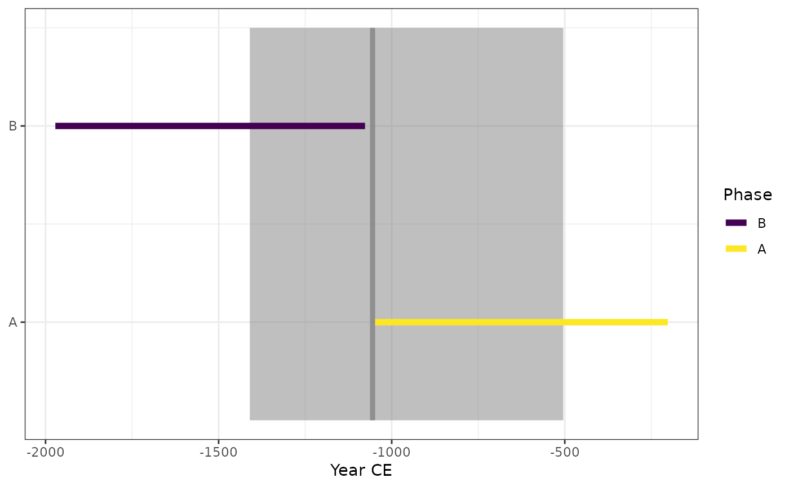

Plot
Usage
multiplot(...)
# S4 method for MCMC
autoplot(
object,
...,
select = NULL,
groups = NULL,
density = TRUE,
interval = NULL,
level = 0.95,
decreasing = TRUE
)
# S4 method for MCMC,missing
plot(
x,
select = NULL,
groups = NULL,
density = TRUE,
interval = NULL,
level = 0.95,
decreasing = TRUE,
...
)
# S4 method for PhasesMCMC
autoplot(
object,
...,
level = 0.95,
decreasing = TRUE,
succession = is_ordered(object),
facet = TRUE
)
# S4 method for PhasesMCMC,missing
plot(
x,
level = 0.95,
decreasing = TRUE,
succession = is_ordered(x),
facet = TRUE,
...
)Arguments
- ...
Extra parameters to be passed to
stats::density().- object, x
An
MCMCor aPhasesMCMCobject.- select
An
integervector specifying the index of the MCMC samples to be drawn.- groups
A
charactervector used for mapping colours.- density
A
logicalscalar: should estimated density be plotted?- interval
A
characterstring specifying the confidence interval to be drawn. It must be one of "credible" (credible interval) or "hpdi" (highest posterior density interval). Any unambiguous substring can be given. IfNULL(the default) no interval is computed.- level
A length-one
numericvector giving the confidence level.- decreasing
A
logicalscalar: should the sort order be decreasing?- succession
A
logicalscalar: should time ranges be plotted instead of densities?- facet
A
logicalscalar: should a matrix of panels defined by phase be drawn?
Value
autoplot()returns aggplotobject.plot()is called it for its side-effects: it results in a graphic being displayed (invisibly returnsx).
Methods (by class)
x = MCMC,y = missing: Plots of credible intervals or HPD regions of a series of events.x = PhasesMCMC,y = missing: Plots the characteristics of a group of events (phase).
Examples
## Coerce to MCMC
eve <- as_events(events, calendar = "CE", iteration = 1)
## BP
eve_BP <- CE_to_BP(eve)
summary(eve_BP)
#> mad mean sd min q1 median q3 max lower upper
#> E21 2849 2587 271 1954 2335 2607 2838 3298 2995 2151
#> E11 3715 3734 99 2920 3668 3734 3806 3949 3930 3560
#> E22 2651 2605 91 2016 2560 2621 2666 3178 2752 2399
#> E12 3190 3185 86 2668 3130 3184 3238 3813 3350 3013
## CE
eve_CE <- BP_to_CE(eve_BP)
summary(eve_CE)
#> mad mean sd min q1 median q3 max lower upper
#> E21 -900 -638 271 -1349 -889 -658 -386 -5 -1046 -202
#> E11 -1766 -1785 99 -2000 -1857 -1785 -1719 -971 -1981 -1611
#> E22 -702 -656 91 -1229 -717 -672 -611 -67 -803 -450
#> E12 -1241 -1236 86 -1864 -1289 -1235 -1181 -719 -1401 -1064
## Plot events
plot(eve_CE, interval = "credible", level = 0.68)
#> Picking joint bandwidth of 15.1
plot(eve_BP, interval = "hpdi", level = 0.68)
#> Picking joint bandwidth of 15.1
## Compute phases
pha <- phase(eve, groups = list(B = c(2, 4), A = c(1, 3)), ordered = TRUE)
summary(pha)
#> $B
#> mad mean sd min q1 median q3 max lower upper
#> start -1766 -1785 99 -2000 -1857 -1785 -1719 -1223 -1981 -1611
#> end -1240 -1235 86 -1833 -1289 -1235 -1181 -719 -1404 -1067
#> duration 560 550 131 4 463 551 638 1156 296 805
#>
#> $A
#> mad mean sd min q1 median q3 max lower upper
#> start -708 -773 147 -1349 -890 -749 -671 -207 -1059 -501
#> end -690 -521 168 -1050 -670 -537 -384 -5 -776 -214
#> duration 277 252 137 0 150 248 344 879 0 486
#>
## Plot phases
plot(pha, succession = FALSE)
plot(pha, succession = TRUE)
